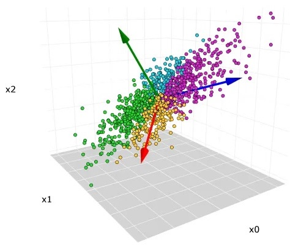
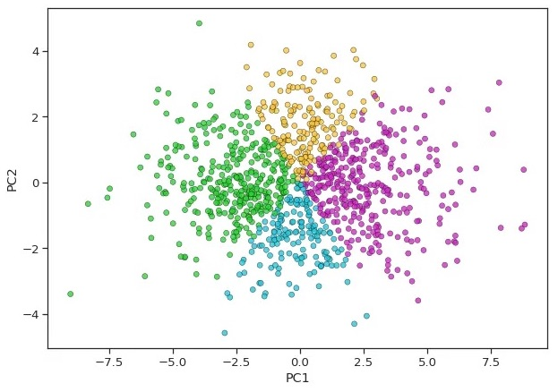
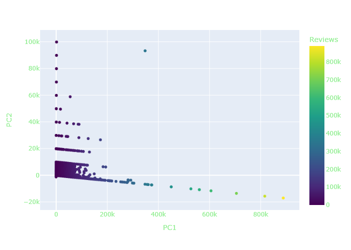
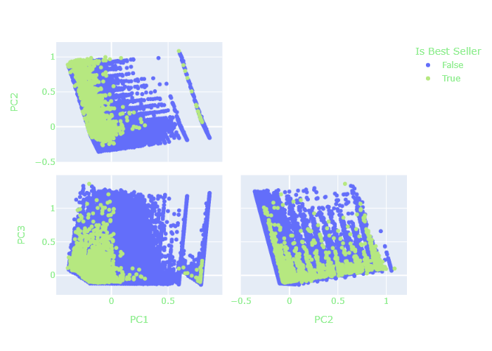
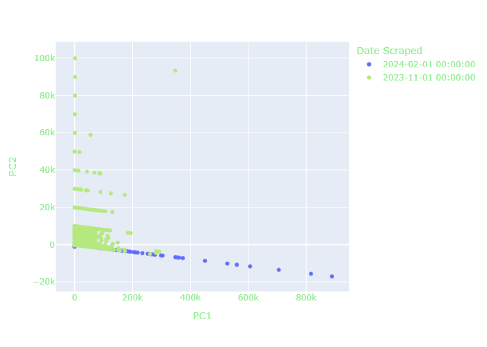
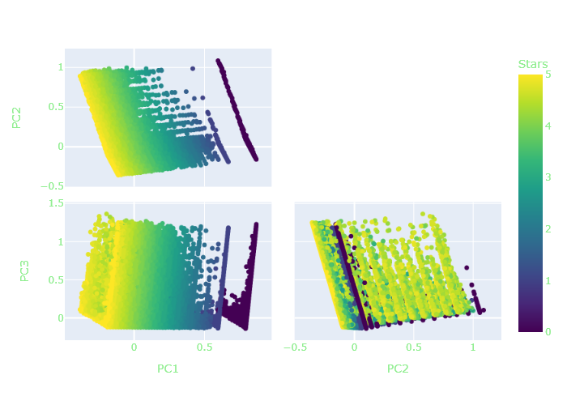
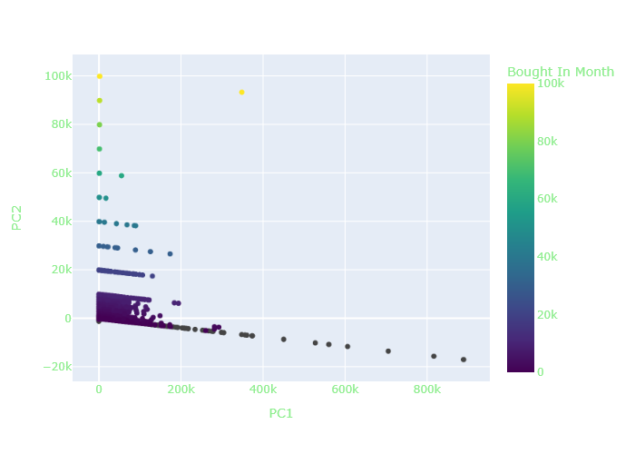
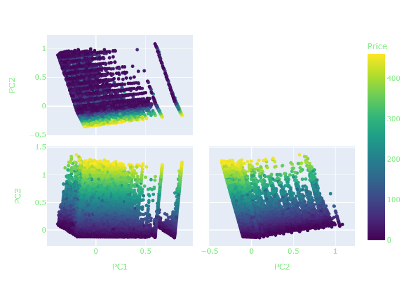
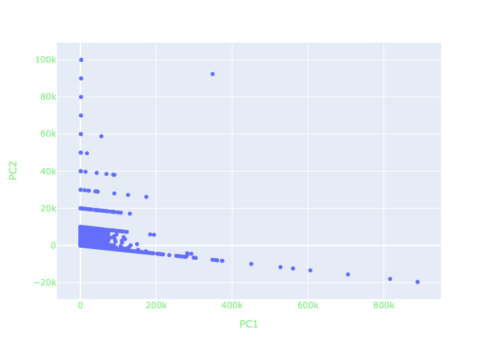
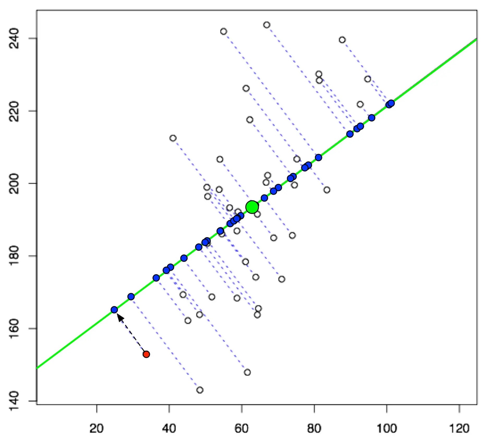

PCA and SVD
Where Principal Component Analysis and Singular Value Decomposition are used, for dimensionality reduction and EDA.
Overview
Principal Component Analysis (PCA) is a dimensionality reduction technique commonly used in data analysis and ML. At its core, PCA aims to transform high-dimensional data into a lower-dimensional space while preserving the most important information. This is achieved by identifying the directions of maximum variance in the original data, known as principal components. These principal components are the eigenvectors of the covariance matrix of the data, with their corresponding eigenvalues equaling the amount of variance explained by each principal component (PC). By retaining the PCs that capture the majority of the variance, PCA enables dimensionality reduction without significant loss of information.
Reducing the dimensionality of data is crucial for simplifying analysis and visualization, as it alleviates the curse of dimensionality and reduces computational complexity. High-dimensional data presents challenges such as increased computational cost, sparsity, and overfitting, which can get in the way of analysis and interpretation. Dimensionality reduction techniques like PCA help address these challenges by capturing the essential structure of the data in a lower-dimensional space, making it easier to visualize, interpret, and analyze complex datasets. Also, reducing dimensionality can improve the performance of machine learning algorithms by reducing noise, mitigating overfitting, enhancing model generalization, and potentially increasing the speed of training/evaluation of the models with the reduced amount of data.


In this specific project, PCA is used to reduce the amount of numerical/boolean factors to just 2 factors, which then enables the examination of those 2 components visually. The relationship between the reduced-dimension factors and the original factors in the dataset is explored, showing the effect and importance of the various factors. And especially since there are more than 1 million rows in the dataset, every amount of data reduction is helpful for subsequent machine learning model training.
Data Preperation
| Is Best Seller | Stars | Reviews | Price | List Price | Bought In Month | |
|---|---|---|---|---|---|---|
| 0 | 0 | 4.8 | 0.0 | 216.00 | 379.00 | 0.0 |
| 1 | 0 | 4.6 | 0.0 | 8.99 | 8.99 | 600.0 |
| 2 | 0 | 4.6 | 0.0 | 59.99 | 59.99 | 50.0 |
| 3 | 0 | 4.5 | 832.0 | 29.99 | 29.99 | 300.0 |
| 4 | 0 | 4.2 | 0.0 | 20.72 | 24.59 | 0.0 |
| Is Best Seller | Stars | Reviews | Price | List Price | Bought In Month | |
|---|---|---|---|---|---|---|
| 0 | 0.0 | 0.96 | 0.000000 | 0.000216 | 0.000369 | 0.000 |
| 1 | 0.0 | 0.90 | 0.000515 | 0.000118 | 0.000148 | 0.020 |
| 2 | 0.0 | 1.00 | 0.000000 | 0.000141 | 0.000141 | 0.000 |
| 3 | 0.0 | 0.96 | 0.000000 | 0.000326 | 0.000355 | 0.002 |
| 4 | 0.0 | 0.92 | 0.000000 | 0.000429 | 0.000548 | 0.001 |
Code
The jupyter notebook code for running the PCA can be found here, or click on the link card to the right.

Results
Important
If the interactive figures don’t load (is blank screen space with caption showing), dont worry: just turn off all ad-blockers/privacy browsing, make sure that Chrome/Firefox is being used, and refresh the page (or close and re-open the website tab) until all figures load.







Relationship of Variables and PCs
